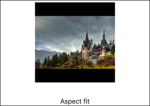
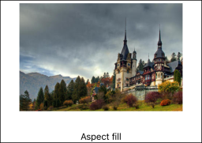
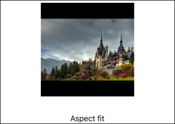
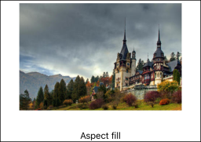
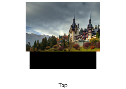
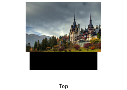
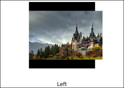
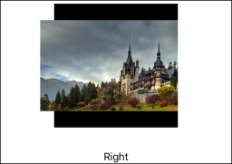
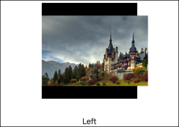
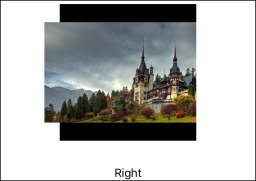

This is going to be a very simple and visual post, showing the differences in what an image looks like using different UIViewContentModes. It’s something I really needed in my early days as an iOS developer. So a couple of years later, I decided to make this visual guide.
We’ll use this image here of the Peleș castle in Romania:
{kind=link}

And we will show it in a square 200 x 200 UIImageView, going through all the possible UIViewContentModes. The 1x asset used in this project was sized to 224 x 148, with the @2x and @3x being scaled proportionally. For a better understanding, the background color of the UIImageView was set to black and clipsToBounds was set to false. Here are the results:
 

 
 
Some observations:
Aspect fit,Aspect fill,Center,Top,Bottom,Left,Right,Top left,Top right,Bottom leftandBottom rightare non-distorting content modes, they keep the original aspect ratio.Aspect fitwill scale the image while keeping the aspect ratio in order to fit the whole image in theUIImageView. So its biggest side will fit perfectly in the view, and its smallest side will be scaled proportionally.Aspect fillwill scale the image while keeping the aspect ratio in order to fill the wholeUIImageView. So its smallest side will fit perfectly in the view, and its biggest side will be scaled proportionally. This one will be bigger than the view, so depending on theclipsToBoundsvalue, it will either go out of theUIImageView, or show only the portion that fits in it.Scale to fillwill scale both sides of the image to fill the entire view. This will obviously change the aspect ratio and stretch the image.- Even though
Redrawhas the same effect here asScale to fill, behind the scenes they are very different.Redrawforces a redraw of the view (callsdrawRect:in your view) in response to geometry changes (for example, a change of the frame’s value). It’s not generally used, and it doesn’t make sense to use it on standard system views. In this case, the result is the same because we usedRedrawon a standard view, with the default implementation ofdrawRect:(which appears to be using theScale to fillmode).